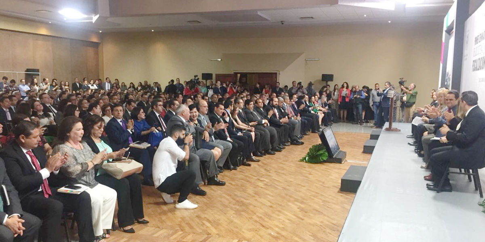
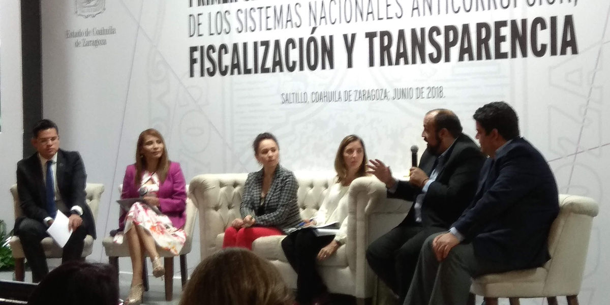
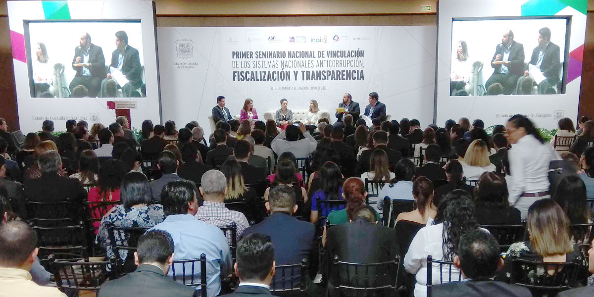

Saltillo, Coahuila a 21 de Junio de 2018.

En evento organizado por la Comisión de Rendición de Cuentas y la Secretaria de la Función Pública del Estado de Coahuila, integrantes de diversas instancias a nivel nacional, estatal y municipal se dieron cita para abordar el tema de combate a la corrupción, transparencia y rendición de cuentas.
La inaugural fue encabezado por el Presidente del Instituto Nacional de Acceso a la Información Pública (INAI), Francisco J. Acuña; por el Secretario de Gobierno, José María Fraustro Siller en representación del Gobernador del Estado, Miguel Ángel Riquelme Solis; por la Presidenta del Tribunal de Justicia del Estado, Miriam Cárdenas Cantú; por la Secretaria de la Función Pública y Rendición de Cuentas del Estado de Coahuila, Teresa Guajardo Berlanga y por la Dra. Norma Julieta del Rio Venegas, Coordinadora de la Comisión de Rendición de Cuentas del Sistema Nacional de Transparencia.

También formaron parte del presidium el Titular de la unidad de Vinculación con el Sistema Nacional Anticorrupción de la Secretaria de la Función Pública a nivel Federal, Dante Preisser Rentería; y de la Red por la Rendición de Cuentas, la Dra. Lourdes Morales Canales.
Entre los asistentes al Seminario estuvieron los Presidentes de los Consejos de Participación Ciudadana de los Sistemas Anticorrupción de los Estados de: Coahuila José Manuel Gil Navarro; Zacatecas, Martha Joanna Corral Peralta; de Durango, Mauricio Fernández Godinez y de Puebla, Karen Berlanga Valdés.
Igualmente estuvieron presentes integrantes de los los CPC´s de: Zacatecas, Durango, Tamaulipas, Estado de México, Puebla, Oaxaca, Tabasco y Coahuila; además asistieron los titulares de las Secretarias Técnicas del Sistema Anticorrupción de los Estados de Durango, Verónica del Rocío Durand Abrego; Zacatecas, Víctor Hugo Galicia Soto; de Tamaulipas, Abelardo Perales Huerta; Estado de México, Josefina Román Vergara y de Coahuila, Marcela Castañeda Agüero.

El Seminario se dividió en cuatro paneles en los que se analizaron temas como: “Estrategias en el Combate a la Corrupción desde el Sistema Nacional Anticorrupción”, “Justicia Administrativa”, “Fiscalización y Rendición de Cuentas” y “Transparencia y Acceso a la Información en los Sistemas Nacionales Anticorrupción, Fiscalización y Transparencia”.
Por parte del CPC de Coahuila, el Consejero Presidente, José Manuel Gil Navarro, participó en el panel Estrategias en el Combate a la Corrupción desde el Sistema Nacional Anticorrupción” en el que también expusieron el titular de la Fiscalía Especializada en Delitos por Hechos de Corrupción, Jesús Homero Flores Mier; la Dra. Lourdes Morales Canales de la red por la Rendición de Cuentas; Dante Preisser Rentería de la Secretaria de la Función Pública y la Mtra. Fabiola Navarro Luna del Instituto de Investigaciones Jurídicas de la UNAM.
21 June 2018